Case study · Sorba.ai · AI Trainer
Preparing data
for machine learning.
I designed dataset forms and a new visual style for Sorba’s AI Trainer, alongside proposals for managing and inspecting datasets. The new dataset forms are live in the Sorba demo.
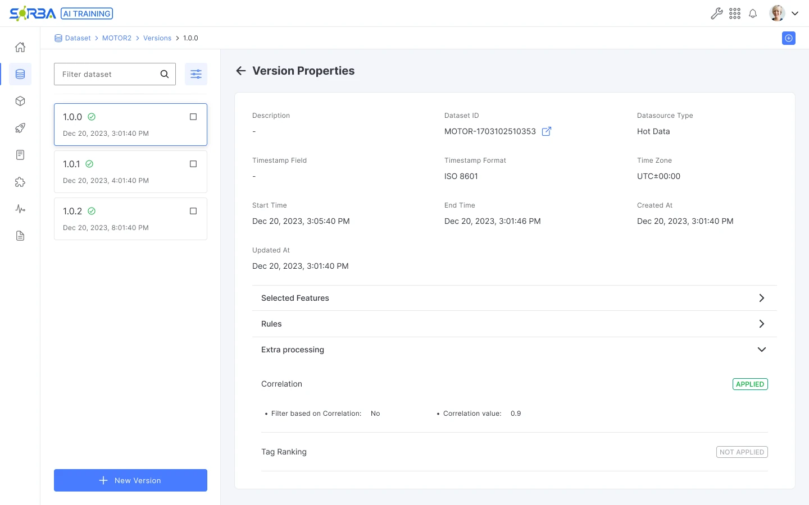
The need
Dataset setup combines source selection, date settings, field operations and version management.
My design
New dataset forms, now in the demo, and a proposed redesign of the module.
The outcome
New dataset forms are live in the demo. The redesigned overview, list, versions, explorer and warnings remain proposals.
Context
Making a technical setup easier to follow.
AI Trainer, formerly ML Trainer, is the part of Sorba’s platform where people prepare and version their data, create projects to analyse it and build models. Everything starts with a dataset, so this case follows that part of the product.
The project took about four months, and I was its only product designer. Parts of the product are under NDA, and many early files were not saved. This case presents a selection of surviving Figma screens with a retrospective account of the work.
My contribution
- Redesigned many of the forms and created new forms and flows, including the dataset forms now in the demo: CSV and XLSX import, aggregation, per-field settings and a hot-data source.
- Defined a new visual style: stronger contrast, more generous spacing and colour applied consistently to every element.
- Proposed a redesign of the dataset list, versions, explorer and warnings, and a new overview.
Working with developers helped me understand the system and its technical limits. It could not tell me whether people would understand the interface, so I treat that as a question to test, not a finding. I had no direct access to customers. Feedback came only from developers testing the work and from the e-commerce team. The surviving files do not provide a complete iteration history. Labels such as “OLD” and “v1” do not establish the sequence or approval status of each design.
Overview · proposal
A home that shows the state of your data.
The earlier overview duplicates navigation and labels the Projects card “Datasets”; its Predictions card also uses dataset actions. My proposal removes the extra navigation column, gives each object its own labels and actions, and places status summaries below.
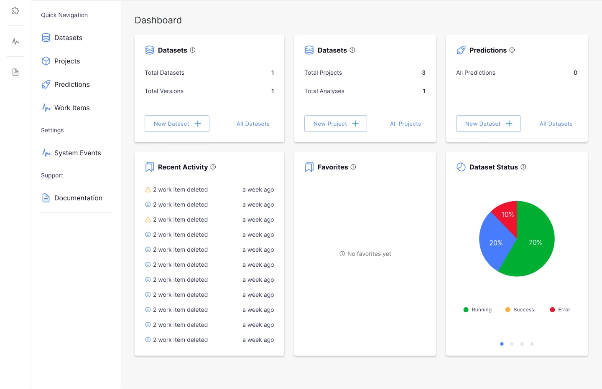
Current view
A quick-navigation list beside the side rail, two cards titled “Datasets”, a Predictions card with a “New Dataset” button and repeated activity rows.
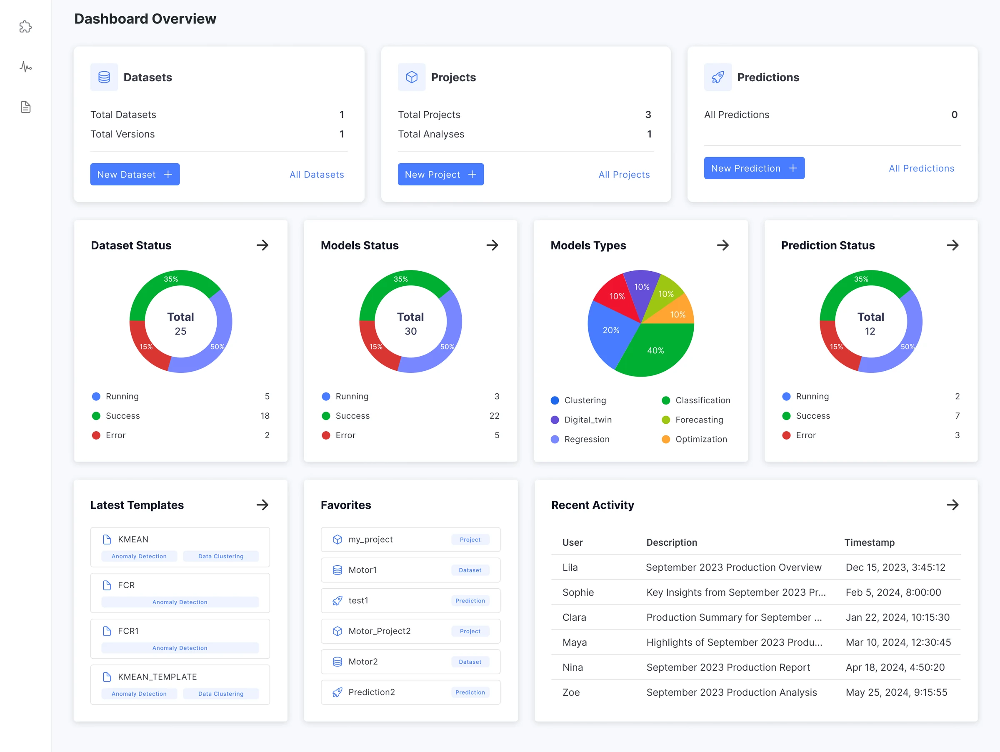
Proposal
Object-specific actions above status charts, templates, favorites and activity. Chart counts and percentages are inconsistent placeholders in the saved design, not product metrics.
Three decisions in the proposal
The proposed overview has more content and is taller. I am not claiming it reduces scrolling or time to task.
Visual style
One look for every element.
Alongside the flows, I defined a new visual style for AI Trainer, with stronger contrast, more generous spacing and consistent colour roles across interface elements.
You can see it in the proposed overview above: solid primary buttons, icon tiles on the summary cards, donut charts with counts in their legends, and a table for activity. The earlier views use outlined buttons and simpler cards.
The dataset flow
From a data source to a dataset version.
This retrospective map connects the tasks represented in the saved designs. It is not a verified navigation sequence; configuration includes source settings, field operations and rules.
Dataset module · reconstructed task map
- Dataset list · proposal
- New dataset forms · live in demo
- Versions · proposal
- Version properties · proposal
- Explorer · proposal
The new dataset forms are live in the Sorba demo.
Redesigned management views and warning dialogs are proposals. The rule builder and inline version-conflict state have unconfirmed release status.
Dataset forms · live
Forms that handle real files.
An earlier saved form shows a CSV field labeled “Only .zip files are allowed”. The new form accepts CSV or XLSX by drag and drop, then asks for the format, the date field, date format, time zone and how to aggregate by time interval.
The new dataset forms are live in the Sorba demo, which people can sign up for and download to try.
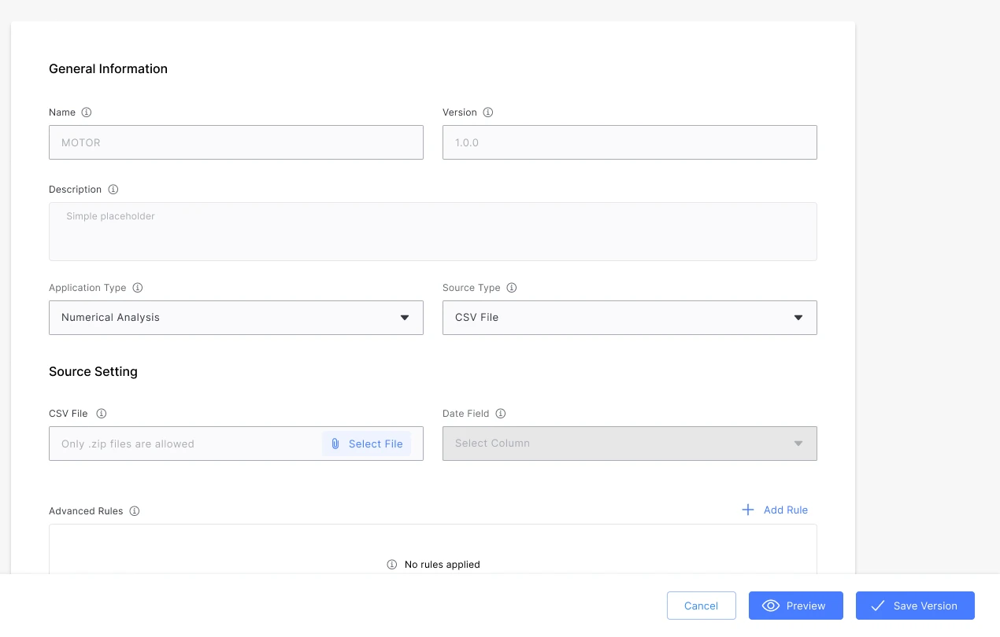
Earlier form
A file field labeled .zip only, a date column and an empty rules area.
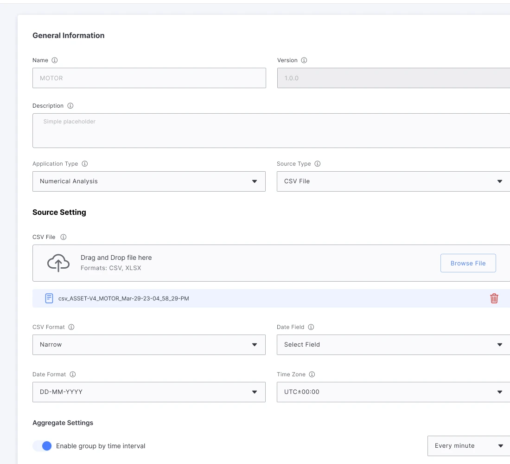
New form · in the demo
Drag and drop for CSV or XLSX, then format, date field, date format, time zone and aggregation by time interval.
Settings for every field.
I kept each field’s operation beside its name, with options to replace or discard values and controls labeled LL and HL. Source settings, field operations and rules sit within one configuration form. Keeping them together makes the configuration visible, but the form remains long; I would test where people need more guidance or progressive disclosure.
Field preferences can be saved and imported; synthetic tags and advanced rules have separate tables with Export and Import controls. Open the complete form (image, opens in a new tab)
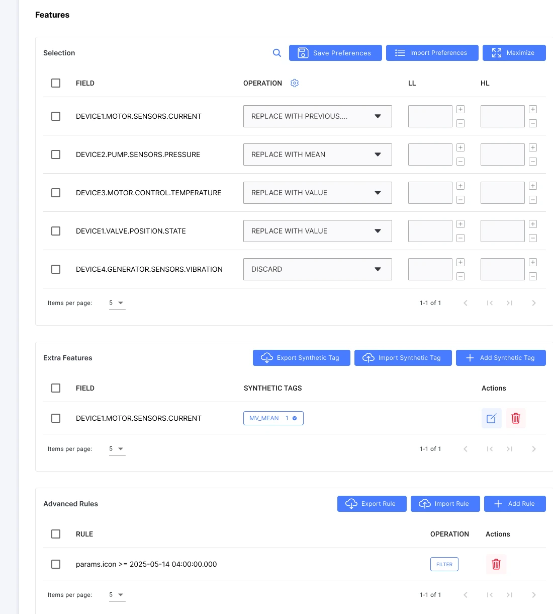
Hot data source · live
Two ways to pick live data.
The hot-data source can be set up with a query in an editor, or by choosing measurements from a list. A view toggle switches between the two, so people who write queries and people who prefer a table use the same form.
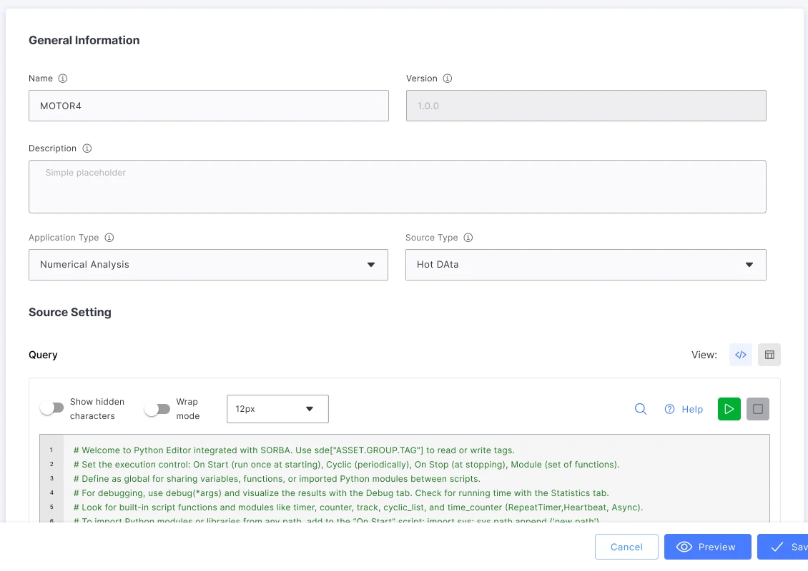
Query view
A Python editor with search, help and run controls.
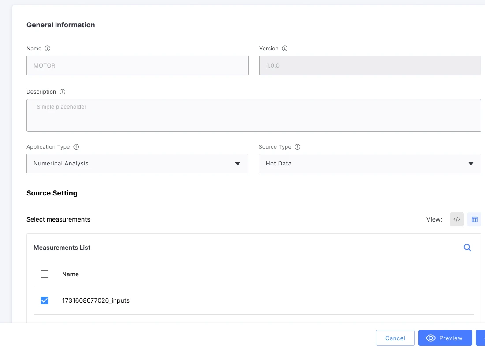
Table view
A measurements list with search and checkboxes.
Rules and recovery · saved designs
Make the rule visible. Make mistakes clear.
A rule is more than a dropdown choice. The builder keeps its field, operation and value together, lists each condition and shows the resulting expression before saving, so the configuration can be inspected.
The saved designs also cover an existing version identifier and leaving a form with unsaved work. The exit confirmation is a proposal; the release status of the rule builder and inline version-conflict state is not confirmed.
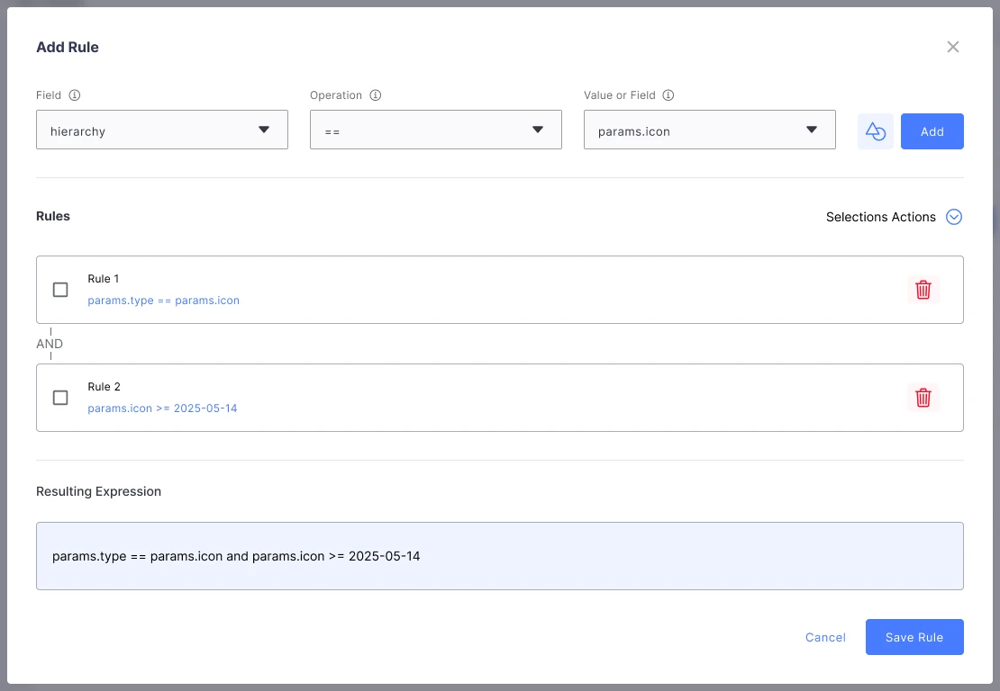
Rule builder · release status unconfirmed
The saved design lists individual conditions and a combined expression before Save Rule. The example values are illustrative, not validated business logic.
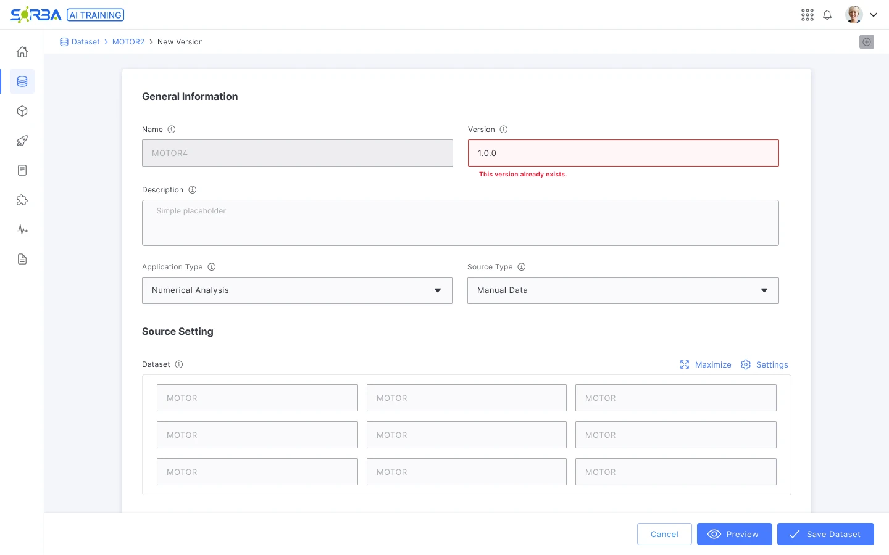
Version conflict · release status unconfirmed
The version field says why the identifier cannot be reused.
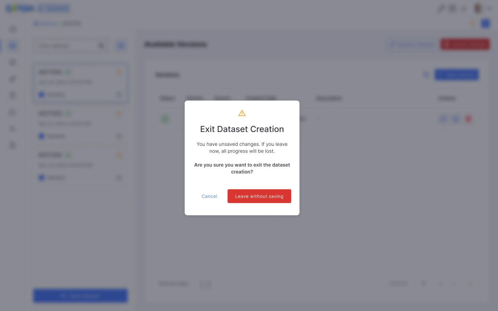
Exit confirmation · proposal
The dialog names the consequence and offers a way to stay.
The proposed exit dialog uses “Cancel” for staying in the form; I would test a clearer label such as “Keep editing”. The saved forms show a Preview action, but no preview-result screen is included in this case.
Dataset module · proposal
A clearer list of what you have.
The earlier dataset cards already show a status icon and a favorite star. My proposal adds a numeric version count and a selection checkbox, while retaining the name and date.
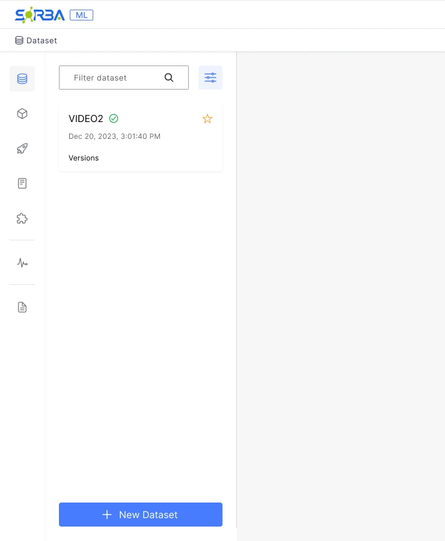
Current view
A dataset card with a name, date, status check, favorite star and Versions label.
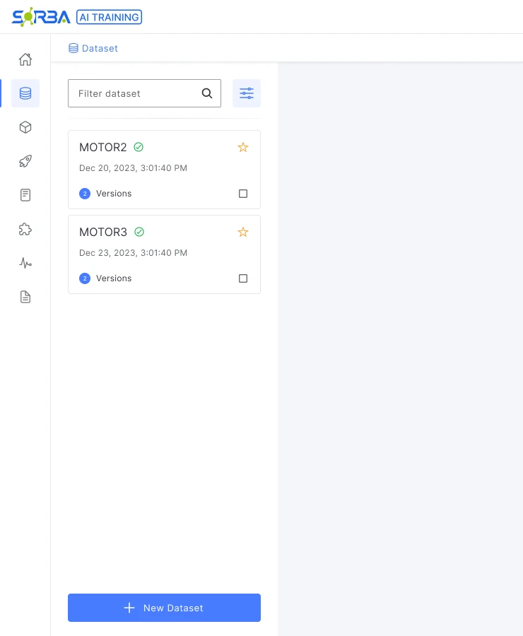
Proposal
The proposal adds a numeric version count and selection checkbox to the dataset cards.
Versions · proposal
The dataset stays in view as versions change.
A dataset and its versions are different objects. In the proposal, the selected dataset stays in the list while its versions appear beside it. Version, source and creation date help tell entries apart, and “New Version” and “Explore” make the next actions explicit.
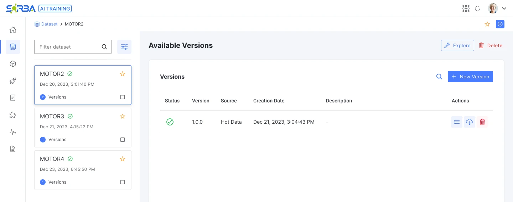
Dataset health · proposal
Status you can read before you open it.
A dataset holds versions, and a version can fail on its own. The card shows a count of versions, and its colour and tooltip say what the count means: all good, one invalid version but still usable, or every version with issues.
Version properties show which extra processing is marked APPLIED or NOT APPLIED.
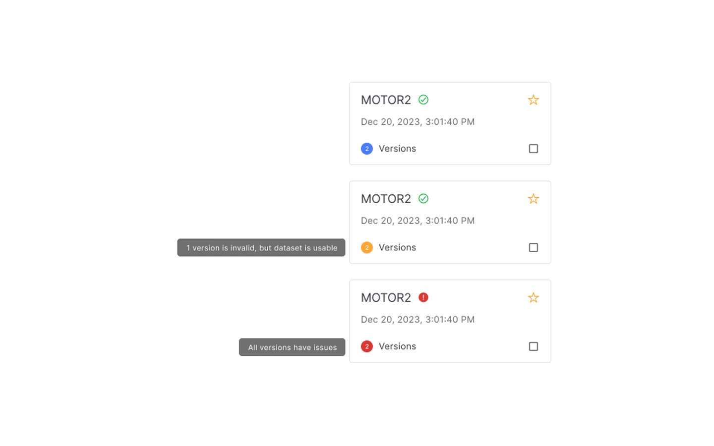
Three health states
The dataset card carries its state in an icon, the count colour and a tooltip.
Version properties
Source, time range and the processing applied, with APPLIED and NOT APPLIED chips.
Explorer and warnings · proposal
Look before you train, think before you delete.
The proposed explorer keeps the selected dataset beside summary charts and analysis tabs. The proposed delete-version dialog warns that deletion cannot be undone and may affect models or processes using that version.
The charts in these designs use sample data.
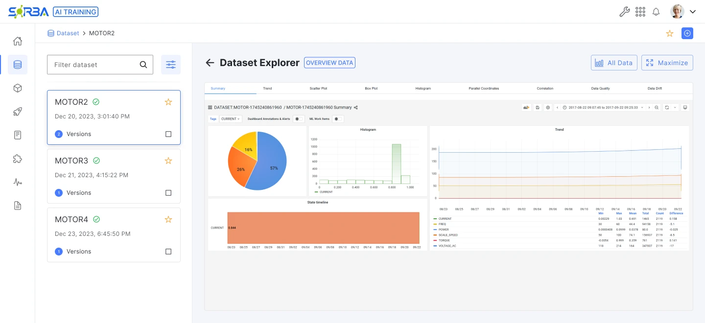
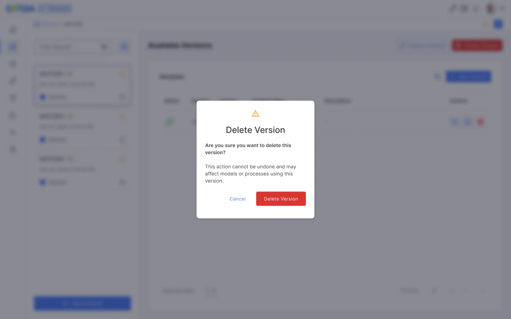
How I worked
Working quickly with internal feedback.
I designed new and revised forms, flows and a visual style, with feedback from developers testing the work and from the e-commerce team. The surviving screens show variants, but they do not provide a complete record linking feedback to individual changes. I had no direct access to customers.
This account combines my recollection with the surviving Figma screens.
Design outcome & reflection
Dataset forms in the demo. Module redesign proposed.
The new dataset forms are part of the Sorba demo. The redesigned overview, list, versions, explorer and warnings remain proposals, and the product still shows the earlier views there.
The designs show how I structure a technical product and make its decisions visible: new forms, rules, versions, status and recovery states. They do not establish fewer errors, faster completion, higher adoption or successful usability with end users, and I do not have usage data.
What I would test next
Choose and configure a source
Can someone pick the right source and set the date and time options without help?
Explain a field operation or a rule
Can they describe the effect of an operation or a combined rule before saving?
Distinguish datasets, versions and recovery states
Can someone identify the selected dataset and version, recover from a naming conflict, and leave a form without losing work by accident?
I would observe task completion, errors, requests for help and how people read the saved configuration. Before implementation, I would also review contrast, form length, disclosure of advanced settings and whether status remains understandable without colour or hover. Developer discussion was technical input, not usability validation.
What I would do differently
Write it down as I go
Keep a short decision log per screen: the problem, the variants and what changed after feedback. That is the part this case cannot show.
Test with the people who prepare data
Watch someone import a file and create a dataset version; note where they stop or guess.
Review the proposal in stages
Review the proposed list and version-status views with the team, then test them before deciding what to build next.